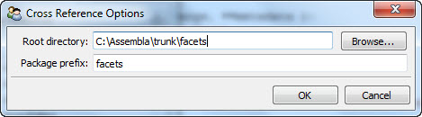

Defines a cross reference tool for displaying and selecting information about the various module-level symbols defined and referenced within a specified Python source code tree. Module-level symbols typically include classes, functions and constants defined with module-level scope. Only statements used to import module-level definitions are included in the reference information.
The cross reference tool automatically constructs a cross reference database whenever a path is assigned to its root facet and the database does not already exist. Once the database has been created, it is not updated unless explicitly requested to do so by clicking on the update button in the tool’s user interface (see the screenshot below).
The cross reference database is stored in the root directory of the path assigned to the root facet with a name of the form: package_xref.data, where package is the package prefix assigned to the tool’s package facet. The database will only contain cross-reference information for symbols imported from packages starting with package. For example, if the value of package is facets, then the database is called facets_xref.data and only contains cross-reference information for symbols imported from facets (e.g. from facets.api import ...).
The top part of the tool’s user interface shows a tree view of all symbols contained in the cross reference. Expanding a symbol displays all files in the source tree containing at least one reference to the symbol. Selecting a particular symbol displays the list of all modules in the source tree which define the symbol. This list may have zero, one or more entries. If the symbol is not defined in the source tree, it will not have a definition. And in some cases, a symbol may be defined more than once in the source tree, in which case it will have multiple definition files listed.
You can restrict the symbols displayed in the tool by typing a string into the Filter field located at the top of the tool’s user interface. Only symbols containing the specified string using a case insensitive match are displayed
Note that the file_name output of the tool is driven by the most recently selected item in the tool’s user interface as follows:
facets.extra.tools.cross_reference
In addition to its input and output connections, the cross reference tool also supports setting the following facets through the tool’s options dialog available via the tool’s feature toolbar:
Shows the cross reference tool with the ArrayEditor symbol selected.
The cross reference tool’s options dialog.